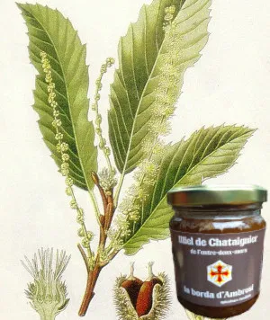

Miel de chataignier

Ce miel est la surprise de cette année particulièrement chaude. Il est issu d'un miellat récolté sur les chênes autour de différents ruchers. Cette récolte est inhabituelle et exceptionnelle. Il se caractérise par une couleur très sombre, des effluves puissants et une saveur nettement affirmée. Son goût est puissant et persistant, aux arômes balsamiques et fruitées (fruits cuits), aux notes évoquant la figue et la réglisse. Il est particulièrement riche en éléments minéraux et peut être recommandé en cas de fatigue.
- miel
- Prix : 16€/kilo
- contrat(s) :
- miel